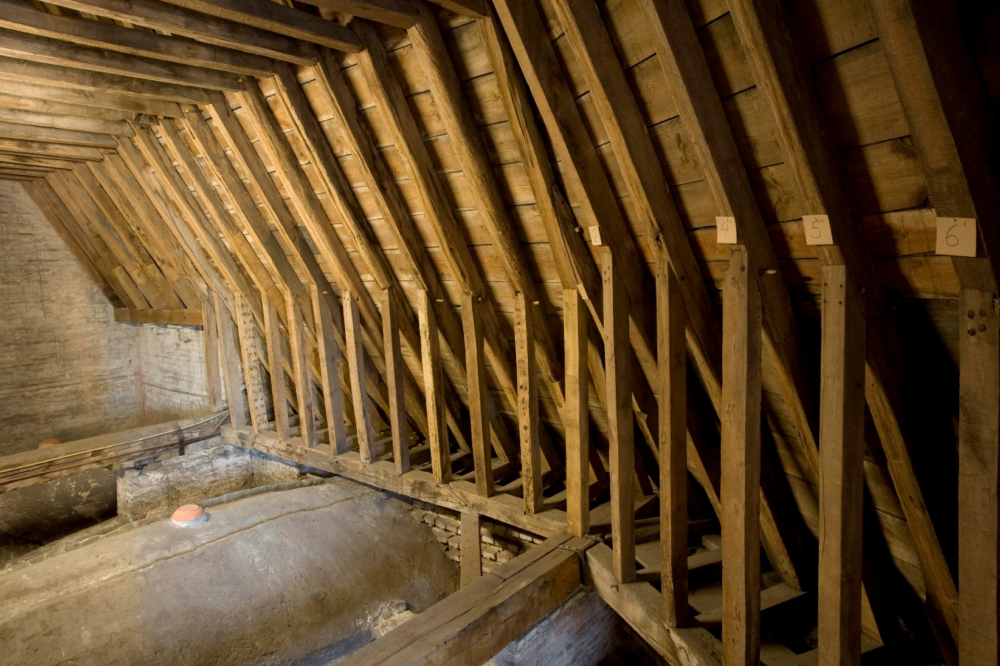

7 Sporenkappen met langsverbinding
7.1 Sporenkappen met makelaars op de hanenbalkfliering
7.1.1 Sint-Janshospitaal, zuidelijke ziekenzaal
De 41,3 m lange zuidelijke ziekenzaal heeft alleen aan de westzijde een verdieping1. De zolder hierboven (29 m lang, 11 tot 14,5 m breed) is overdekt met een sporenkap van 49 sporenparen en wordt aan de oostzijde afgesloten door een houten afsluitwand.
De daksporen hebben een doorsnede van 18-20 cm op 18-20 cm en staan hart op hart 60 tot 65 cm uiteen. De blokkelen liggen op een dubbele muurplaat en een voetraveelbalk. Daksporen en standzonen zijn met een pen-en-gat verbinding in deze blokkelen vastgemaakt terwijl de pen-en-gat verbinding tussen de sporen en de bovenkant van de standzonen eveneens met twee smeedijzeren nagels is verzekerd. Elk sporenpaar is voorzien van drie hanenbalken die met pen-en-gat verbindingen zijn vastgezet. Bijzonder is de hanenbalkfliering die niet wordt gedragen door standvinken maar is opgehangen aan de pennen van de makelaars. Die zijn opgesteld in ieder vierde sporenpaar. Alle verbindingen tussen daksporen, hanenbalken, makelaars en fliering zijn van het pen-en-gat type. Zowel aan de oost- als westzijde worden de eerste sporenparen verbonden door windlatten in beide dakvlakken. Aan de oostzijde verbinden deze sporenparen 47 (boven) en 34 (onder), aan de westzijde sporenparen 1 (boven) en 13 (onderaan noordkant) of 15 (onderaan zuidkant). De windlatten zijn volledig ingelaten in de buitenzijde van de daksporen.
De getrokken telmerken zijn aan de noordzijde voorzien van een bijteken. De dakhelling bij de oostgevel bedraagt 61,5°.
De veldatum van drie monsters uit het westelijke deel van de dakkap kon telkens exact bepaald worden door de aanwezigheid van de laatst gevormde ring onder de schors. Deze werd gevormd in 1285d2 wat in overeenstemming is met een aanvang van de bouw van de zuidelijke ziekenzaal na 1276 en een voltooiing omstreeks 1291. Het begin van de bouw na 1276 blijkt uit een gedateerde grafplaat onder een zuil tussen de zuidelijke en middelste ziekenzaal3. De rekeningen van het Sint-Janshospitaal in het jaar 1291 vermelden voor de fermerie de aankoop van houten onderdelen voor een kap en daktegels, en betalingen aan zagers en timmerlieden4.
7.2 Sporenkappen met hanenbalkfliering en makelaars op de trekbalken
7.2.1 Onze-Lieve-Vrouwekerk, schip
Waarschijnlijk bij de bouw van het nieuwe gotische koor werden in de bestaande sporenkap met twee hanenbalken van het schip makelaars op de trekbalken geplaatst5 (zie fig. 11: B en 6.2.1.2). De makelaars zijn halfhouts verbonden met de hanenbalken en de nok van de sporenparen. De hanenbalkflieringen tussen de makelaars en de schoren tussen de makelaars en de hanenbalkflieringen zijn met een pen-en-gat verbinding vastgezet.
Tijdens deze verbouwing werd een tijdelijke afsluitwand opgericht waarbij de twee laatste (oostelijke) sporenparen werden aangepast (fig. 11: C). De plaats van de verdwenen beplanking van deze wand wordt aangeduid door een smalle inkeping aan weerszijden van de makelaar. Verder waren de planken genageld op de daksporen, de hanenbalken en op vijf verdwenen horizontale balken die doorheen de makelaar waren gestoken en met een halfhoutse verbinding in de daksporen waren vastgemaakt.
7.2.2 Onze-Lieve-Vrouwekerk, koor, westelijk deel
Zoals vermeld (zie 6.5.2) kunnen in de 37 meter lange bekapping boven het koor op basis van de constructie en de telmerken twee bouwfasen worden onderscheiden6.
Het westelijke deel telt 33 sporenparen (telmerken van west naar oost) en omvat zelf eveneens twee delen. In beide delen hebben de daksporen een doorsnede van 18-20 op 20 cm en staan zij hart op hart gemiddeld 75 cm uiteen. De twee hanenbalken zijn met pen-en-gat verbindingen in de daksporen vastgezet (zie fig. 41: A) . De voet van de kap bestond oorspronkelijk uit blokkelen en standzonen op een dubbele muurplaat. Net als in het schip (zie 6.2.1.2) verdween deze opstelling bij de verhoging van de borstwering, toen de daksporen ongeveer 60 cm werden ingekort. Het open pengat onderaan de ingekorte sporen is de enige verwijzing naar deze oorspronkelijke toestand.
Het westelijke deel van de kap telt elf sporenparen en is uitgevoerd als een sporenkap. Het oostelijke deel telt 22 sporenparen, oorspronkelijk voorzien van een hanenbalkfliering met makelaars. Van deze opstelling zijn alleen de makelaars bewaard gebleven, maar de open pengaten in de makelaars tonen aan dat de hanenbalkflieringen en de onderliggende schoren met pen-en-gat verbindingen waren vastgezet. Deze onderdelen verdwenen bij de opstelling van schaargebinten met flieringen omstreeks 1400. De hanenbalken zijn eveneens met pen-en-gat verbindingen in de makelaars ingelaten.
Zoals in het schip bedraagt de dakhelling 58°.
Uit de onderdelen die duidelijk niet zijn hergebruikt uit oudere kapconstructies werden vier monsters genomen voor dendrochronologisch onderzoek. Een middelcurve kon echter niet worden berekend. Eén monster vertoont wel een goede overeenkomst met de referentiekalenders. De jongste gemeten jaarring dateert bij deze boorkern uit 1241d en de veldatum wordt na 1250d gesitueerd7. Deze dendrochronologische terminus post quem is in overeenstemming met de datering in de tweede helft van de 13de eeuw door Janse en Devliegher8.
Zowel in deze kap als in die van het schip werden nadien onder de onderste hanenbalken zware flieringen op schaargebinten ingebracht. Hierbij werden in het koor de hanenbalkflieringen weggenomen - enkel de makelaars bleven bewaard. Gelijktijdig werden de borstweringen verhoogd, de daksporen ingekort en nieuwe blokkelen en standzonen aangebracht. Een monster uit een schaargebinte werd dendrochronologisch gedateerd tussen 1380 en 1410d9.
7.2.3 Onze-Lieve-Vrouwekerk, Heilig-Kruiskapel
De Heilig-Kruiskapel aan de oostzijde van de toren wordt in de literatuur gedateerd in de tweede helft van de 14de eeuw10. Na bouwhistorisch en dendrochronologisch onderzoek van de dakkap blijkt de kapel echter ouder te zijn11.
Zonder de apsis telt deze sporenkap 18 sporenparen. De sporen hebben een rechthoekige doorsnede (9-12 op 15 cm) en staan hart op hart gemiddeld 45 cm uiteen. Op één uitzondering na zijn alle houtverbindingen van het pen-en-gat type en telkens met een houten toognagel en één of meer smeedijzeren nagels geborgen. De blokkelen liggen op een dubbele muurplaat en zijn met een pen vastgezet in een bijkomende raveelbalk. Opvallend zijn de hoge (1,6 m) standzonen.
Op drie plaatsen zijn de blokkelen vervangen door trekbalken waarop de makelaars staan. De beide hanenbalken en de hanenbalkfliering zijn met pennen vastgezet in de makelaars en zijn daar dus gedeeld. De verbindingen tussen de makelaars en de hanenbalkfliering wordt verstevigd door schoren onder de fliering, maar ook door lange schoren bovenop de fliering. Deze schoren zijn bovenaan halfhouts met de makelaars verbonden.
De getrokken telmerken zijn van west naar oost aangebracht. Op één dakspoor is een vlot- of eigendomsmerk aangetroffen terwijl een ander spoor nog een vlotgat bevat.
De middelcurve die kon berekend worden met de opgemeten jaarringpatronen van vier van de zes genomen boorkernen leverde zeer goede resultaten bij de vergelijking met de referentiekalenders. De jongste gemeten jaarring dateert uit 1290d. Het vellen van het hout kan daardoor tussen 1298 en 1325d gesitueerd worden12.

7.2.4 Onze-Lieve-Vrouwekerk, noordelijke zijbeuk
Deze sporenkap van 55 sporenparen is nagenoeg intact bewaard gebleven13. De sporen hebben een doorsnede van 16 op 16 cm en staan hart op hart gemiddeld 50 cm uiteen. Aan de noordzijde zijn de sporen en standzonen met een pen-en-gat verbinding ingelaten op de blokkelen die rusten op een dubbele muurplaat14. Aan de zuidzijde is de binnenste muurplaat vervangen door een raveelbalk die in de trekbalken is ingelaten en waarin de blokkelen met een pen-en-gat verbinding zijn vastgemaakt. De standzonen staan op deze raveelbalk en niet op de blokkelen. Zowel aan de noord- als zuidzijde zijn de standzonen met een pen-en-gat verbinding in de sporen vastgezet. Op zeven plaatsen zijn de blokkelen vervangen door trekbalken. Op deze trekbalken staan makelaars die tot in de nok doorlopen. De onderste hanenbalken die met een pen-en-gat verbinding in de sporen zijn vastgezet, bestaan ter hoogte van de makelaars uit twee delen die met een pen-en-gat verbinding zijn vastgezet. Dezelfde verbinding kenmerkt de korbelen onder deze hanenbalken, de hanenbalkfliering die uit zeven balken bestaat, en de schoren tussen de makelaars en de hanenbalkfliering.

De bovenste hanenbalken daarentegen zijn halfhouts verbonden met de sporen en de makelaars. De verbindingen zijn met een houten toognagel vastgemaakt. Aan de westelijke zijde van de kap bevinden zich schuine windlatten tussen sporenparen 1 (bovenaan) en 19 (onderaan), aan de oostelijke zijde tussen sporenparen 34 (onderaan) en 55 (bovenaan). De windlatten zijn halfhouts verbonden met de buitenkant van de sporen.
De telmerken op de sporen, blokkelen en hanenbalken zijn van west naar oost aangebracht, terwijl de telmerken op de hanenbalkfliering van oost naar west verlopen.
Van de negen genomen boorkernen konden er slechts drie gebruikt worden voor de berekening van een middelcurve. De vergelijking met referentiekalenders leverde geen uitstekend maar toch een aanvaardbaar resultaat op. De jongste gemeten jaarring dateert uit 1346d, wat toelaat om de veldatum van het eikenhout te dateren tussen 1355 en 1370d15. Deze datering is in overeenstemming met de in literatuur voorgestelde datering in de tweede helft van de 14de eeuw16.
7.2.5 Onze-Lieve-Vrouwekerk, zuidelijke zijbeuk
In het centrale deel van de zuidelijke zijbeuk zijn 24 sporenparen bewaard gebleven van een oorspronkelijk grotere kap waarvan de juiste lengte nog moeilijk te achterhalen is17. Typologisch is deze kap nagenoeg identiek aan deze van de noordelijke zijbeuk. In de zuidbeuk zijn de bovenste hanenbalken echter met pen-en-gat verbindingen vastgezet in zowel de sporen als de makelaars.
In de kap zijn twee constructiefasen aanwijsbaar. Elk deel telt nu twaalf sporenparen maar vertoont duidelijke verschillen: de daksporen in het westelijk deel hebben een doorsnede van 20 x 13 cm, deze in het oostelijk deel een doorsnede van 16 x 14 cm. Elk deel heeft een eigen nummering waarbij de telmerken op de sporen steeds van oost naar west zijn aangebracht. Op de hanenbalkfliering en de makelaars echter verloopt de nummering van oost naar west in het oostelijk deel en omgekeerd in het westelijk deel. De telmerken van de daksporen aan de noordzijde zijn voorzien van een bijteken. Aan de zuidzijde is elk deel voorzien van een schuine brede windlat die volledig in de buitenkant van de daksporen is ingelaten.
Dakkap van de zuidelijke zijbeuk van de O.L.V.-kerk.
Door de overwegend snelle groei van het hout kwamen slechts drie van de tien boorkernen in aanmerking voor de berekening van een middelcurve. De vergelijking met de referentiekalenders leverde echter een uitstekend resultaat. De jongste gemeten jaarring dateert uit 1446d, waardoor de kapdatum te situeren is tussen 1454 en 1464d18.
De verdwenen dakkap ten westen van het hierboven beschreven deel werd waarschijnlijk bij de bouw van het zuidwestelijk ingangsportaal vervangen door een sporenkap met vier schaargebinten en een stijlgebint tegen de westgevel. De sporenparen zijn halfhouts verbonden door een enkele hanenbalk. Alle verbindingen in de gebinten zijn van het pen-en-gat type. Waarschijnlijk in een latere periode werden bijkomende schaargebinten op de oorspronkelijke geplaatst. In deze gebinten, met een magere houtsectie en slordig of niet gekantrechte houten, zijn alle verbindingen koud opgenageld.
Het constructiehout van de oorspronkelijke kap vertoont een opvallend snelle groei (= brede groeiringen). Het dendrochronologisch onderzoek op drie genomen boorkernen leverde daardoor geen betrouwbare datering op.
7.3 Sporenkappen met hanenbalkflieringen op standvinken
7.3.1 Kraanplein 6, Huis Ieper, westelijk diephuis
De kaart van Marcus Gerards uit 1562 toont op deze plaats twee diephuizen die grotendeels zijn bewaard gebleven19. Het westelijke huis is het jongste van de twee panden. De 40 sporenparen van de dakkap staan hart op hart 48 cm uiteen en zijn telkens verbonden door twee hanenbalken. Deze halfhoutse verbindingen zijn telkens met een houten toognagel en twee smeedijzeren nagels geborgen. De getrokken telmerken zijn van noord naar zuid aangebracht op het oostelijke uiteinde van de hanenbalken. De sporen hebben een doorsnede van 13 x 14 cm tot 15 x 15 cm. Tegen de voorgevel bevindt zich aan weerszijden een schuine windlat die aan de binnenkant van de eerste 13 sporenparen is opgenageld. Het is niet duidelijk of deze windlatten tot de oorspronkelijke constructie behoren.
Onder de onderste hanenbalken, waarvan slechts één bewaard bleef, bevindt zich een hanenbalkfliering op vier geschoorde standvinken. Alle verbindingen tussen standvinken, schoren en fliering zijn van het pen-en-gat type. De getrokken telmerken van deze constructie bevinden zich onderaan de hanenbalkfliering en bovenaan de standvinken.
De sporen rusten onderaan op een voetraveling die slechts aan één zijde gedeeltelijk bewaard bleef. De sporen en standzonen zijn met een pen-en-gat verbinding in de blokkelen vastgezet. De 70 tot 75 cm hoge standzonen zijn bovenaan opgenageld in een inkeping in de sporen.
In een latere bouwfase werd de dakconstructie verstevigd door de inbreng van flieringen op schaargebinten ter hoogte van drie van de vier standvinken. Bij de gebinten zijn alle verbindingen koud opgenageld. Waarschijnlijk zijn bij deze ingreep de onderste hanenbalken en het overgrote deel van de voetraveling verdwenen. Ook de windlatten werden bij deze aanpassing voor een deel verwijderd.
De acht boorkernen die hier werden genomen vormen samen een 135 jaar lange middelcurve waarvan de meest recente jaarring dateert uit 1336d. Dit betekent dat de veldatum gesitueerd kan worden tussen 1336 en 1364d20.
7.3.2 Gouden-Handstraat 21
Het huis is gelegen in een domein dat sinds 1322 eigendom was van Jan vander Vlamincpoorte21. Zijn familie zou het domein nog ongeveer een eeuw lang bezitten. Het stadszicht van Marcus Gerards uit 1562 toont het diephuis met een hoge traptoren. Hiervan zijn nog enkele resten bewaard gebleven.
De dakkap telt nog 28 van de oorspronkelijke 29 sporenparen. Het eerste paar verdween bij de vervanging in de 17de eeuw van de uitkragende houten gevel door de huidige bakstenen gevel. De sporen hebben een doorsnede van gemiddeld 10 x 12 cm en staan hart op hart gemiddeld 45 cm uiteen. De sporen zijn koud op de muurplaten gesteld. Aan de westzijde ligt de muurplaat op een 90 cm hoge borstwering.
Elk sporenpaar is verbonden door twee zware hanenbalken. De onderste hanenbalken zijn grotendeels verwijderd of afgezaagd ter hoogte van de later ingebrachte flieringen. Enkel bij de achtergevel zijn vijf hanenbalken bewaard gebleven. De telmerken zijn van zuid (straatkant) naar noord aangebracht. Aan straatzijde zijn er schuine windlatten opgenageld aan de binnenzijde van de daksporen. Er zijn geen aanwijzingen voor standzonen.

De hanenbalkfliering (sectie 18 x 20 cm) onder de onderste hanenbalken steunt ter hoogte van de achtergevel op een eenvoudig geprofileerde balksleutel en verder op drie standvinken. Deze hebben een vierkante voet, zijn vervolgens achtzijdig en bovenaan, waar de zware kromme schoren zijn aangebracht, opnieuw met een vierkante sectie. Ter hoogte van de huidige straatgevel bevindt zich nog het pengat van de schoor die de verbinding vormde met de verdwenen houten gevel. Alle verbindingen in deze constructie zijn van het pen-en-gat type.
In een latere periode werden er aan weerszijden van de standvinken halve schaargebinten aangebracht waarvan de dekbalk met een pen in de standvinken is geborgen. De flieringen liggen zodoende op dezelfde hoogte als de oorspronkelijke hanenbalkfliering. Onderaan zijn de korbelen en schoren met een pen-en-gat geborgen, bovenaan zijn ze opgenageld. Deze latere toevoegingen zijn uitgevoerd in hout van een mindere kwaliteit en kleinere houtsecties22.
De afmetingen van de bakstenen in de achtergevel en de westelijke borstwering (25 x 5 cm) suggereren een bouw van het pand in de periode 1300-1340.
7.3.3 Kortewinkel 10
Het huidige Jezuïetenklooster omvat drie panden: twee neogotische gebouwen uit 1874 en, daartussen, een huis met een gotische gevel uit de 16de eeuw23. De achtergevel van dit huis (baksteen van 26 x 6 cm groot) is echter beduidend ouder en vertoont in de top spitsboogvelden en een spaarveld met twee stijgende rondbogen.
Door de huidige inrichting van kamers in het onderste deel van de zolder kon enkel het deel boven de onderste hanenbalken onderzocht worden. De sporen hebben een doorsnede van gemiddeld 9 x 12 cm en staan hart op hart 50 tot 55 cm uiteen. De 30 sporenparen hebben elk twee hanenbalken die halfhouts verbonden zijn. De bovenste hanenbalken zijn met twee smeedijzeren nagels vastgezet, de onderste met een houten toognagel. De telmerken zijn van zuid naar noord (straatkant) aangebracht. In een latere bouwfase zijn gordingen, een nokbalk en nokstijlgebinten ingebracht.
In een van de onderliggende kamers zijn in de middenas van het gebouw een standvink en een slanke kromme windschoor zichtbaar. Wellicht is dit een hanenbalkfliering op standvinken. Er zijn geen aanwijzingen van gebinten op dit niveau.
De afmetingen van de bakstenen in de achtergevel suggereren een bouw van het huis, en van de kap, in de periode 1300-1340.
De ziekenzalen van het Sint-Janshospitaal in de inventaris van het bouwkundig erfgoed: https://inventaris.onroerenderfgoed.be/erfgoedobjecten/82410.↩︎
Hanraets 2000.↩︎
De Witte 2000, 141.↩︎
Gysseling 1977, I-3, 1567-1574.↩︎
Van Eenhooge 2009, 27, 31. De Onze-Lieve-Vrouwekerk in de inventaris van het bouwkundig erfgoed: https://inventaris.onroerenderfgoed.be/erfgoedobjecten/82359.↩︎
Van Eenhooge 2009, 31-33.↩︎
Eeckhout & Galand 2005.↩︎
Janse & Devliegher 1962, 337.↩︎
Eeckhout & Hoffsummer 2006.↩︎
Devliegher 1954, 188-194; Devliegher 1997.↩︎
Van Eenhooge 2009, 32-33, 37.↩︎
Eeckhout & Galand 2005.↩︎
Van Eenhooge 2009, 34-37.↩︎
Deze opstelling is waarschijnlijk niet helemaal oorspronkelijk. Het lijkt er op dat er, zoals aan de zuidzijde, een voetraveling was en dat er pas later een muurtje werd onder gebouwd.↩︎
Eeckhout & Galand 2005.↩︎
Devliegher 1954, 188-201.↩︎
Van Eenhooge 2009, 36-38.↩︎
Eeckhout & Galand, 2005.↩︎
Huis Ieper in de inventaris van het bouwkundig erfgoed: https://inventaris.onroerenderfgoed.be/erfgoedobjecten/29424.↩︎
Haneca 2014e.↩︎
Voor een uitvoerige studie: Beernaert et al. 2007. Gouden-Handstraat 21 in de inventaris van het bouwkundig erfgoed: https://inventaris.onroerenderfgoed.be/erfgoedobjecten/82913.↩︎
Voor een afbeelding: Devliegher 1975², 106. Luc Devliegher vermeldt verkeerdelijk dat de makelaar (sic) onder de schaargebinten staat.↩︎
Idem, 177. Kortewinkel 10 in de Inventaris van het bouwkundig erfgoed: https://inventaris.onroerenderfgoed.be/erfgoedobjecten/29414.↩︎